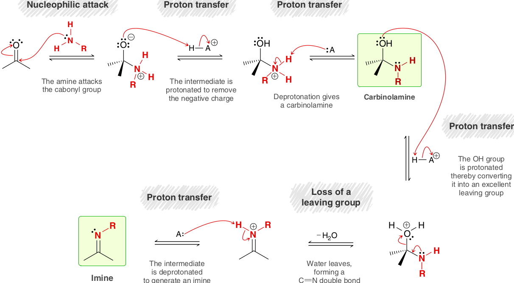
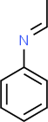
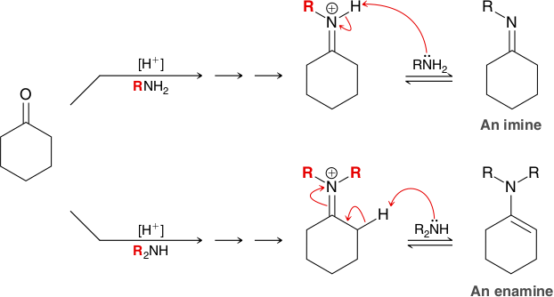

Schiff Bases
Ammonia, primary aliphatic amines (RNH2), and primary aromatic amines (ArNH2) react with the carbonyl group of aldehydes and ketones to give an imine, often referred to as a Schiff base, compounds that possess a C=N double bond and are common in biological pathways. Imines are usually unstable unless the C=N group is part of an extended system of conjugation (e.g., rhodopsin) and are generally not isolated.
Imine formation begins with a nucleophilic attack, while acetal formation begins with a proton transfer. To understand the difference, we must recognize that in the presence of an amine, any strong acid catalyst will transfer its proton to the amine, giving an ammonium ion. This process is effectively irreversible as a result of the vast difference in pKa values. That is, the number of molecules of HCl present in solution is negligible, and instead, the acidic species will be ammonium ions. Under these conditions, it is very unlikely that a ketone will be protonated, because protonated ketones are highly acidic species (pKa ≈ −7). The concentration of protonated ketone is therefore negligible, so it is unlikely to serve as an intermediate in our mechanism. The first step in Mechanism 19.6 is a nucleophilic attack in which a molecule of amine (that has not been protonated) functions as a nucleophile and attacks the carbonyl group. The resulting intermediate can then undergo two successive proton transfer steps, generating a carbinolamine. As explained a moment ago, the identity of the acid HA+ is most likely an ammonium ion: H−A+, RN+H3.
Once the carbinolamine has been formed, formation of the imine is accomplished with three steps: Proton transfer ⟶ Loss of a leaving group ⟶ Proton transfer.
The pH of the solution is an important consideration during imine formation, with the rate of reaction being greatest when the pH is around 4.5 (Figure 19.7). If the pH is too high (i.e., if no acid catalyst is used), the carbinolamine is not protonated (step 4 of the mechanism), so the reaction occurs more slowly. If the pH is too low (too much acid is used), most of the amine molecules will be protonated to give ammonium ions, which are not nucleophilic. Under these conditions, step 2 of the mechanism occurs too slowly. As a result, care must be taken to ensure optimal pH of the solution during imine formation.
 Acetaldehyde | + |  Aniline | H+ ⇌ |  Ethylideneaniline (An imine) | + | H2O |
 Cyclohexanone | + | NH3 | H+ ⇌ | (An imine) | + | H2O |
Many different compounds of the form RNH2 will react with aldehydes and ketones, including compounds in which R is not an alkyl group. In the following examples, the R group of the amine has been replaced with a group that has been highlighted in red:
 | [H+] HO−NH2 ⟶ −H2O |  Oxime |
| [H+] H2N−NH2 ⟶ −H2O | A hydrazone |
Aldehydes and ketones react with several nucleophiles to give imines. When hydroxylamine (NH2OH) is used as a nucleophile, an oxime is formed. When hydrazine (NH2NH2) is used as a nucleophile, a hydrazone is formed. The mechanism for each of these reactions is directly analogous to the mechanism of imine formation.
Secondary Amines. Formation of enamines
Secondary amines react with aldehydes and ketones to form enamines. The name enamine is derived from -en- to indicate the presence of a carbon-carbon double bond and -amine to indicate the presence of an amino group. An example is enamine formation between cyclohexanone and piperidine, a cyclic secondary amine. Water is removed by a Dean-Stark trap (Figure 16.1), which forces the equilibrium to the right.
Cyclohexanone | + |  Piperidine (a secondary amine) | H+ ⇌ | 1-Piperidino-1-cyclohexene (An enamine) | + | H2O |
This mechanism of enamine formation is identical to the mechanism that was shown for imine formation except for the last step:
The difference in the iminium ions explains the different outcomes for the two reactions. During imine formation, the nitrogen atom of the iminium ion possesses a proton that can be removed as the final step of the mechanism. In contrast, during enamine formation, the nitrogen atom of the iminium ion does not possess a proton. As a result, elimination from the adjacent carbon is necessary in order to yield a neutral species.